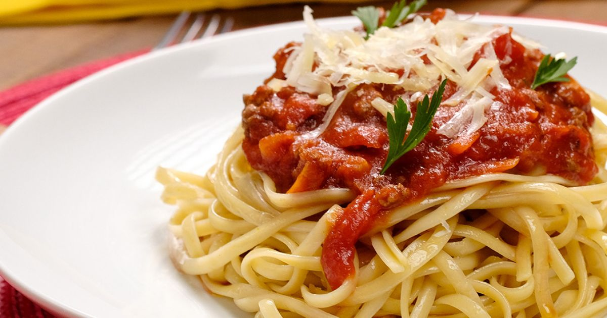

Veja a seguir
Nesse site você verá receitas de familias, como de vovó,com gostinho de infancia.
Nesse site você verá receitas de familias, como de vovó,com gostinho de infancia.

Você sabia que o pastel de feira, que a gente come hoje em dia, se originou em 1940? Isso mesmo! A receita foi criada e adaptada por imigrantes japoneses. Eles queriam algum prato que tivesse ligação com os rolinhos primavera e as guiozas, mas usando os ingredientes brasileiros. E assim nasceu o pastel frito que encontramos na maioria das lanchonetes.
| Ingrediente | Link | Preço |
| Farinha | "https://www.paodeacucar.com/produto/166396/farinha-de-trigo-tradicional-renata-tipo-1-pacote-1kg" | R$ 9,99 |
| Oleo | href="https://www.paodeacucar.com/produto/131661/oleo-de-soja-liza-pet-900ml" | R$ 8,79 |
| Aguardente | "https://www.paodeacucar.com/produto/72566/aguardente-51-pirassununga-garrafa-965ml" | R$ 16,29 |
| Carne moida | href="https://www.paodeacucar.com/produto/1602860/carne-moida-de-patinho-qdo-resfriada-qualita-500g" | R$ 39,90 |
| Ovos | href="https://www.paodeacucar.com/produto/178252/ovos-vermelhos-grande-organico-taeq-bandeja-10-unidades" | R$ 20,90 |
| Cebola | href="https://www.paodeacucar.com/produto/67204/cebola-a-granel-600g" | R$ 4,79 |
| alho | href="https://www.paodeacucar.com/produto/47797/alho-100g" | R$ 4,79 |
| manteiga | href="https://www.paodeacucar.com/produto/29992/manteiga-francesa-com-sal-president-tablete-200g" | R$ 13,39 |
| azeitona | href="https://www.paodeacucar.com/produto/20961/azeitona-verde-em-conserva-sem-caroco-qualita-vidro-155g" | R$ 15,29 |
| cebolinha | href="https://www.paodeacucar.com/produto/77617/salsa-e-cebolinha-unidade" | R$ 5,99 |
| pimenta | href="https://www.paodeacucar.com/produto/11866/pimenta-do-reino-preta-em-po-kitano-pacote-50g" | R$ 11,29 |

Você pode acrescentar pimentão picado a gosto se desejar. Se preferir, no lugar do molho pronto você pode preparar seu próprio molho de tomate!
| Ingrediente | Link | Preço |
| Cebola | https://www.superpaguemenos.com.br/cebola-kg/p | R$ 2,89 |
| Azeite | https://www.superpaguemenos.com.br/azeite-portugues-andorinha-extra-virgem-500ml/p | R$ 42,90 |
| Macarrão | https://www.superpaguemenos.com.br/macarrao-com-ovos-renata-spaguete-n8-500g/p | R$ 5,49 |
| Carne moida | https://www.superpaguemenos.com.br/carne-moida-leve-mais-especial-500g/p | R$ 26,99 |
| Tomate | https://www.superpaguemenos.com.br/tomate-italiano-kg/p | R$ 2,89 |
Se você quiser um pão ainda mais fofinho, ajuste a quantidade de fermento para 45 g e, se quiser regular o sal, pode usar apenas 1/2 colher (sopa) como fizemos no vídeo-receita.Para deixar seu pão caseiro fofinho, também é importante usar leite: ele deixará a massa bem macia.Mas, se você quer mais crocancia, faça seu pão caseiro com água.A receita de pão caseiro é mais prática do que muitos imaginam, mas, para que ela saia perfeita, é preciso respeitar o tempo de descanso da massa e as temperaturas. Por isso, uma boa dica é deixar seu pão caseiro descansando no forno bem baixinho e com a porta entreaberta: assim ele cresce bastante e deixa o processo de fazer pão caseiro simples e rápido! Por mais que esteja fazendo um pão caseiro salgado, não esqueça do açúcar: ele serve de alimento para o fermento e, portanto, não vai deixar seu pão caseiro doce!
| Ingrediente | Link | Preço |
| Farinha | https://www.superpaguemenos.com.br/farinha-de-trigo-dona-benta-tradiconal-1kg/p | R$ 5,49 |
| Acucar | https://www.superpaguemenos.com.br/acucar-refinado-uniao-1kg/p | R$ 4,99 |
| leite | https://www.superpaguemenos.com.br/leite-longa-vida-integral-italac-1l/p | R$ 5,59 |
| Fermento | https://www.superpaguemenos.com.br/fermento-em-po-dona-benta-fermix-10g/p | R$ 1,49 |
| Ovo | https://www.superpaguemenos.com.br/ovos-brancos-extra-satoshi-com-20-unidades/p | R$ 15,99 |